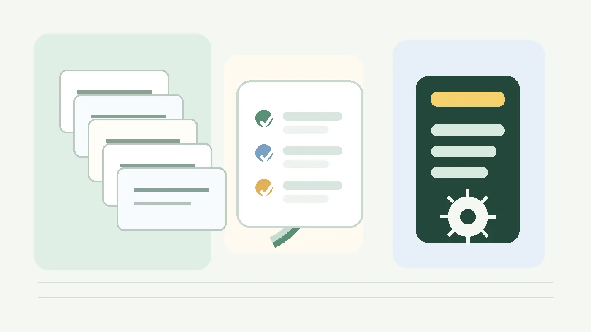

會重複做
例如每學期都要整理活動資料、做通知圖卡、產出確認清單或轉換一批文件。
 頂溪國小
頂溪國小第 9 單元
把做順的 AI 協作流程留下來，讓下次不用從頭解釋。
第 7、8 單元的品牌生圖流程，不是靠一句神奇咒語完成的。它背後有一組規則，提醒 AI 要讀哪些素材、怎麼選四精靈、哪些地方不能亂來。
前面單元安裝或使用流程時，有些 skill 其實已經在背後運作；你不一定看過它們的名字：
skill 可以保存步驟、範本和檢查規則，讓 AI 下次比較容易沿著同一套方法工作。

先不用想「我要不要學會做 skill」，只要先判斷這件事是不是值得被留下來。
例如每學期都要整理活動資料、做通知圖卡、產出確認清單或轉換一批文件。
例如一定要檢查日期、姓名、校徽、個資、格式，或一定要使用某個範本。
例如會用到校內品牌素材、固定表單、流程包、舊年度資料或指定資料夾。
比較自然的做法，不是一開始就急著建立 skill，而是先和 AI 助手一起把任務做完。過程可以先抓三個動作：
一開始是你帶著 AI 助手做事：說出需求、提供資料、指出結果哪裡不對，讓 AI 一次次把流程做順。
如果某個卡點 AI 助手試了兩三次還解不掉，就明確請它上網搜尋相關資訊，再把查到的做法放回流程。
任務完成後，請 AI 把這次能順利完成的做法整理成 SOP。做下一次時再修改，等穩定後才變成 skill。
例如大量紙本文件用事務機掃進電腦後，常常會遇到空白頁、方向歪掉、上下顛倒等問題。你可能一開始只是請 AI 幫忙整理掃描檔；做幾次之後，慢慢整理出 SOP：原始檔不能覆蓋、處理後要另存新檔、要留下處理紀錄、輸出前要自己確認。
重要觀念
我們當然希望 AI 助手越來越接近全自動，但只要最後成果要拿去歸檔、上傳或交辦，就不能把責任交出去。
就算 AI 助手說信心度 99% 以上、不需要人類確認，最後輸出前還是要自己確認。
現成 skill 已經可用時，用自然語言說你要做什麼，再請 AI 先確認它會照哪套規則處理。
不確定名稱時，可以直接問 AI：「目前有哪些可用的 skill？」再請它說明適合哪一類任務。
請啟動品牌生圖 skill，幫我做一張運動會 LINE 小卡。請先告訴我你會使用哪些素材和檢查規則，不要直接生圖。
我會先確認品牌素材來源、四精靈選角理由、LINE 直式比例、主標題與日期是否清楚，再請你確認文字內容後開始生圖。
文字確認後再做，校徽不要讓影像模型自己畫，最後請幫我列出發布前檢查項目。
skill 不是要讓行政同仁變成工程師，而是把已經做順、值得保留下來的 AI 協作方式固定下來。